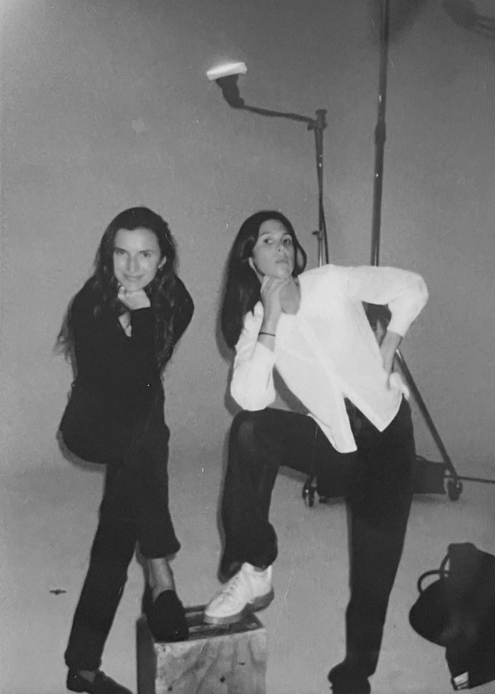

Studio Chardin Simon is a creative studio founded by Marie-Sophie Chardin and Molaine Simon, based between Stockholm and Lisbon.
After more than a decade working across the fashion industry, we created the studio around a shared curiosity for images, people and the little things around us.
Our work is shaped by everything we love; fashion, interiors, art, nature, or our guilty love for pop culture. We believe inspiration rarely comes from looking at fashion alone.
We approach every project with kindness, curiosity and a good sense of humour.
Our studio collaborates with a wide range of creative individuals, including both established names and rising talents.

© 2026 Studio Chardin Simon AB
Stockholm · Lisbon
Stockholm · Lisbon